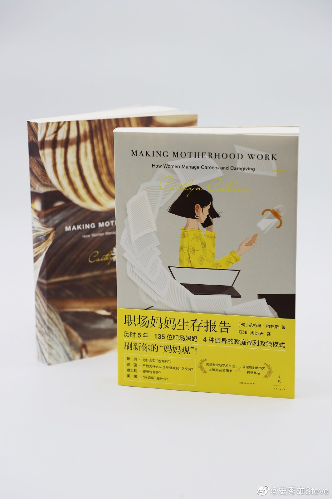

"信奉自由主义经济的美国，妈妈普遍需要依靠市场力量来分担育儿责任，但是这种模式下妈妈的满意度其实是最低的，因为女性的安全感和信心来源于政府、社会和家庭的支持。所以那些被消费主义驱动，一味鼓吹女性努力挣钱获得独立的倡导其实是值得怀疑的。"
@史秀雄Steve:
我又来给大家送福利+推荐好书了！
今天推荐的这本《职场妈妈生存报告》是从界面文化的@林奶粒 对作者的采访了解到的。作者凯特琳·柯林斯是一位社会学教授，她为了研究不同国家政策和文化环境对职场妈妈的影响，花5年时间访谈了瑞典、德国、意大利和美国的135位职场妈妈，最终形成了一个非常有趣的跨文化比较研究的成果。
我推荐这本书的原因有两点：
第一，这是一本刷新你对工作vs带娃问题的书。作者提出我们应该改变自己的语言，不再提工作——生活平衡这个说法，因为当说“平衡”的时候，就好像这是一个个人能力的问题，如果你既想要事业又需要带娃，就必须拥有强大的时间管理和协调能力。但是在比较了4个不同国家的职场妈妈之后，你会深刻地意识到当一个社会里面的妈妈们难以平衡职业发展和生育责任时，这种困境根本上是公共政策和文化态度的产物。
比如，瑞典妈妈们从来不用担心让雇主知道自己怀孕了，也很习惯于早早下班去接孩子放学，而这样的体验对于柯林斯这个美国人来说是需要反复确认才敢相信的。分析瑞典的家庭政策历史我们则可以看到，这样美好的状态其实是上世纪60年代开始瑞典政府有意识逐步构建的结果。
对于中国的女性来说，刷新这种认识非常重要，你不仅可以放下对平衡问题的自我怀疑，更能够敏锐地发现现实当中那些给你带来阻碍的条条框框。了解了不同国家女性的体验之后，你也会在自己的生育问题上获得一些启示，比如信奉自由主义经济的美国，妈妈普遍需要依靠市场力量来分担育儿责任，但是这种模式下妈妈的满意度其实是最低的，因为女性的安全感和信心来源于政府、社会和家庭的支持。所以那些被消费主义驱动，一味鼓吹女性努力挣钱获得独立的倡导其实是值得怀疑的。
第二，这本书也是非常好的女权主义启蒙书籍。许多人对女权主义的印象还停留在微博上的各种论战，觉得这好像是一种很有攻击性的意识形态。然而这本书的视角可以让我们明白，女权主义的存在是极有价值的，因为许多政府和社会存在着深刻的制度上的不平等和不合理。
很多情况下，这些问题甚至都不是单纯的社会与个体之间的对立，而是因为社会政策是一个非常复杂的问题，某一些心怀好意的政策有时候反而会创造新的不平等。比如在德国，女性拥有长达3年的产假，但是这个政策同时也推动公众期望女性花更多时间在家里，给许多渴望职场发展的女性带来了巨大的压力。女权主义视角的探讨，就是要去理清楚这些复杂的系统性问题，在反复的批判和改革当中寻找更好的制度方向。
政府是性别化的根因，政府的政策影响了人们的态度，女性产假太长让人们认为育儿是女人的事情，而性别中立的家庭假期则让公众相信育儿对所有人都很重要，男性也应该参与进来。相比于文化批判，女权主义在政策和制度问题上的发声是更加具有社会价值的。作为一个男性，这本书也让我看到了这重要的一面，对女权主义也有了更多认同和支持，它是一个推动社会走向更完善的自我修正性的力量。
总之，这是一本不分男女都非常值得读的书，不论是塑造自己的家庭观念，还是树立公民公共意识，还是提升对政策和制度问题的理解来说都是很有价值的。4个国家的妈妈们迥异的个人视角加上大量研究结论的支撑，形成了非常有趣的对比。另外译者的水平也不错，文字十分流畅。
为了让更多朋友了解到这本书，这里做个有奖转发，邀请大家积极参与。规则如下：
1. 关注我的微博 @史秀雄Steve
2. 转发此微博并且@ 你的三位可能会对此书感兴趣的好友
3. 我将于11月29日周日晚上10点通过@微博抽奖平台 抽取【5】位按照规则进行转发的朋友赠送一本《职场妈妈生存报告》 抽奖详情
抽奖详情
今天推荐的这本《职场妈妈生存报告》是从界面文化的@林奶粒 对作者的采访了解到的。作者凯特琳·柯林斯是一位社会学教授，她为了研究不同国家政策和文化环境对职场妈妈的影响，花5年时间访谈了瑞典、德国、意大利和美国的135位职场妈妈，最终形成了一个非常有趣的跨文化比较研究的成果。
我推荐这本书的原因有两点：
第一，这是一本刷新你对工作vs带娃问题的书。作者提出我们应该改变自己的语言，不再提工作——生活平衡这个说法，因为当说“平衡”的时候，就好像这是一个个人能力的问题，如果你既想要事业又需要带娃，就必须拥有强大的时间管理和协调能力。但是在比较了4个不同国家的职场妈妈之后，你会深刻地意识到当一个社会里面的妈妈们难以平衡职业发展和生育责任时，这种困境根本上是公共政策和文化态度的产物。
比如，瑞典妈妈们从来不用担心让雇主知道自己怀孕了，也很习惯于早早下班去接孩子放学，而这样的体验对于柯林斯这个美国人来说是需要反复确认才敢相信的。分析瑞典的家庭政策历史我们则可以看到，这样美好的状态其实是上世纪60年代开始瑞典政府有意识逐步构建的结果。
对于中国的女性来说，刷新这种认识非常重要，你不仅可以放下对平衡问题的自我怀疑，更能够敏锐地发现现实当中那些给你带来阻碍的条条框框。了解了不同国家女性的体验之后，你也会在自己的生育问题上获得一些启示，比如信奉自由主义经济的美国，妈妈普遍需要依靠市场力量来分担育儿责任，但是这种模式下妈妈的满意度其实是最低的，因为女性的安全感和信心来源于政府、社会和家庭的支持。所以那些被消费主义驱动，一味鼓吹女性努力挣钱获得独立的倡导其实是值得怀疑的。
第二，这本书也是非常好的女权主义启蒙书籍。许多人对女权主义的印象还停留在微博上的各种论战，觉得这好像是一种很有攻击性的意识形态。然而这本书的视角可以让我们明白，女权主义的存在是极有价值的，因为许多政府和社会存在着深刻的制度上的不平等和不合理。
很多情况下，这些问题甚至都不是单纯的社会与个体之间的对立，而是因为社会政策是一个非常复杂的问题，某一些心怀好意的政策有时候反而会创造新的不平等。比如在德国，女性拥有长达3年的产假，但是这个政策同时也推动公众期望女性花更多时间在家里，给许多渴望职场发展的女性带来了巨大的压力。女权主义视角的探讨，就是要去理清楚这些复杂的系统性问题，在反复的批判和改革当中寻找更好的制度方向。
政府是性别化的根因，政府的政策影响了人们的态度，女性产假太长让人们认为育儿是女人的事情，而性别中立的家庭假期则让公众相信育儿对所有人都很重要，男性也应该参与进来。相比于文化批判，女权主义在政策和制度问题上的发声是更加具有社会价值的。作为一个男性，这本书也让我看到了这重要的一面，对女权主义也有了更多认同和支持，它是一个推动社会走向更完善的自我修正性的力量。
总之，这是一本不分男女都非常值得读的书，不论是塑造自己的家庭观念，还是树立公民公共意识，还是提升对政策和制度问题的理解来说都是很有价值的。4个国家的妈妈们迥异的个人视角加上大量研究结论的支撑，形成了非常有趣的对比。另外译者的水平也不错，文字十分流畅。
为了让更多朋友了解到这本书，这里做个有奖转发，邀请大家积极参与。规则如下：
1. 关注我的微博 @史秀雄Steve
2. 转发此微博并且@ 你的三位可能会对此书感兴趣的好友
3. 我将于11月29日周日晚上10点通过@微博抽奖平台 抽取【5】位按照规则进行转发的朋友赠送一本《职场妈妈生存报告》
- 